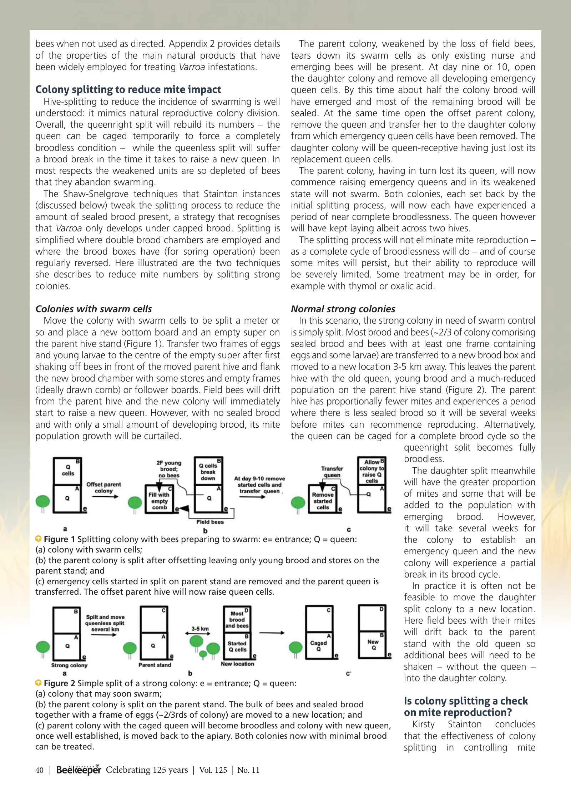

bees when not used as directed. Appendix 2 provides details
of the properties of the main natural products that have
been widely employed for treating Varroa infestations.
Colony splitting to reduce mite impact
Hive-splitting to reduce the incidence of swarming is well
understood: it mimics natural reproductive colony division.
Overall, the queenright split will rebuild its numbers – the
queen can be caged temporarily to force a completely
broodless condition – while the queenless split will suffer
a brood break in the time it takes to raise a new queen. In
most respects the weakened units are so depleted of bees
that they abandon swarming.
The Shaw-Snelgrove techniques that Stainton instances
(discussed below) tweak the splitting process to reduce the
amount of sealed brood present, a strategy that recognises
that Varroa only develops under capped brood. Splitting is
simplified where double brood chambers are employed and
where the brood boxes have (for spring operation) been
regularly reversed. Here illustrated are the two techniques
she describes to reduce mite numbers by splitting strong
colonies.
Colonies with swarm cells
Move the colony with swarm cells to be split a meter or
so and place a new bottom board and an empty super on
the parent hive stand (Figure 1). Transfer two frames of eggs
and young larvae to the centre of the empty super after first
shaking off bees in front of the moved parent hive and flank
the new brood chamber with some stores and empty frames
(ideally drawn comb) or follower boards. Field bees will drift
from the parent hive and the new colony will immediately
start to raise a new queen. However, with no sealed brood
and with only a small amount of developing brood, its mite
population growth will be curtailed.
Figure 1 Splitting colony with bees preparing to swarm: e= entrance; Q = queen:
(a) colony with swarm cells;
(b) the parent colony is split after offsetting leaving only young brood and stores on the
parent stand; and
(c) emergency cells started in split on parent stand are removed and the parent queen is
transferred. The offset parent hive will now raise queen cells.
Figure 2 Simple split of a strong colony: e = entrance; Q = queen:
(a) colony that may soon swarm;
(b) the parent colony is split on the parent stand. The bulk of bees and sealed brood
together with a frame of eggs (~2/3rds of colony) are moved to a new location; and
(c) parent colony with the caged queen will become broodless and colony with new queen,
once well established, is moved back to the apiary. Both colonies now with minimal brood
can be treated.
The parent colony, weakened by the loss of field bees,
tears down its swarm cells as only existing nurse and
emerging bees will be present. At day nine or 10, open
the daughter colony and remove all developing emergency
queen cells. By this time about half the colony brood will
have emerged and most of the remaining brood will be
sealed. At the same time open the offset parent colony,
remove the queen and transfer her to the daughter colony
from which emergency queen cells have been removed. The
daughter colony will be queen-receptive having just lost its
replacement queen cells.
The parent colony, having in turn lost its queen, will now
commence raising emergency queens and in its weakened
state will not swarm. Both colonies, each set back by the
initial splitting process, will now each have experienced a
period of near complete broodlessness. The queen however
will have kept laying albeit across two hives.
The splitting process will not eliminate mite reproduction –
as a complete cycle of broodlessness will do – and of course
some mites will persist, but their ability to reproduce will
be severely limited. Some treatment may be in order, for
example with thymol or oxalic acid.
Normal strong colonies
In this scenario, the strong colony in need of swarm control
is simply split. Most brood and bees (~2/3 of colony comprising
sealed brood and bees with at least one frame containing
eggs and some larvae) are transferred to a new brood box and
moved to a new location 3-5 km away. This leaves the parent
hive with the old queen, young brood and a much-reduced
population on the parent hive stand (Figure 2). The parent
hive has proportionally fewer mites and experiences a period
where there is less sealed brood so it will be several weeks
before mites can recommence reproducing. Alternatively,
the queen can be caged for a complete brood cycle so the
queenright split becomes fully
broodless.
The daughter split meanwhile
will have the greater proportion
of mites and some that will be
added to the population with
emerging
brood.
However,
it will take several weeks for
the colony to establish an
emergency queen and the new
colony will experience a partial
break in its brood cycle.
In practice it is often not be
feasible to move the daughter
split colony to a new location.
Here field bees with their mites
will drift back to the parent
stand with the old queen so
additional bees will need to be
shaken – without the queen –
into the daughter colony.
Is colony splitting a check
on mite reproduction?
Kirsty
Stainton
concludes
that the effectiveness of colony
splitting in controlling mite
40 |
Celebrating 125 years | Vol. 125 | No. 11